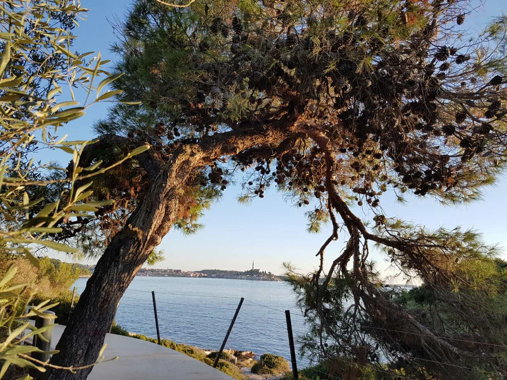
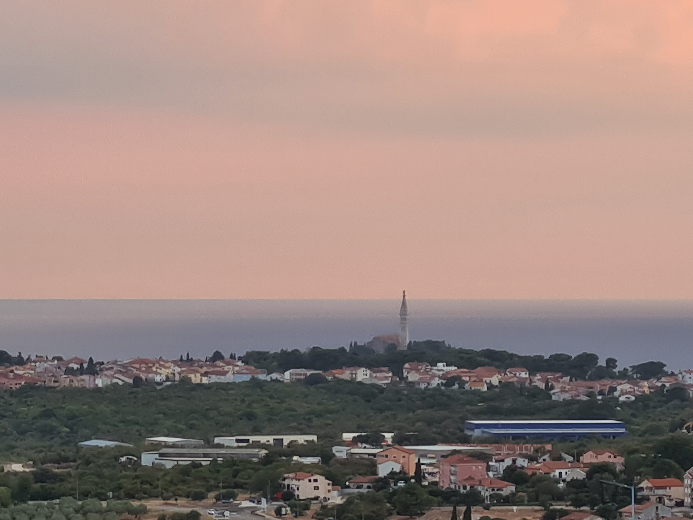

Rovinj
Rovinj je mali grad u Istria, ali je poznat diljem svijeta kao jedan od najlijepših. Krase ga čiste plaže s bistrom vodom i stari grad koji se nalazi na poluotoku. Stari grad je prepoznatljiv po svojim uskim ulicama i usko zbijenim visokim kućama koje jedna drugu podupiru na kosini podno crkve Sv. Eufemije. Ta crkva prvotno je bila posvećena Sv. Juraju, no nakon što je u grad dopremljen sarkofag s tijelom kršćanske mučenice Eufemije, stanovnici okolnih mjesta hodočastili su na grob Sv. Eufemije. Crkva Sv. Jurja postala je premalena te se početkom X.st. počela graditi nova crkva. Oko 950.g. nova trobrodna bazilika s tri polukružne izbočene apside bila je gotova. Sv. Eufemija danas je zajedno sa Sv. Jurjem zaštitnica grada.

Tijekom ljeta u Rovinju mnogo turista, a s time i grad organizira mnoga događanja kao što su koncerti, predstave i veđene ture te se sve to može pogledati na stranicam turističke zajednice grda Rovinja
Naravno Rovinj ima i svoje muzeje jedan od njih je muzej grada rovinja koji se nalazi na glavnom gradskom trgu te je smješten u baroknoj palači grofova Califfi iz 17. - 18. stoljeća. Još jedan rovinjski muzej je Ekomuzej Kuća o Batani te je posvećen tradicijskom drvenom plovilu batàni i memoriji rovinjske zajednice koja ga je izabrala za svoj simbol.
No ako ste se došli odmarati, sunčati i uživati u hrani sve to se može naći u Rovinju. Samo ako se šetate uz rivu vidjet ćete mnoge restorane i kafiće s predivnim pogledima na more, ali ako ne želite biti blizu mora samo se uputite kroz uličice starog grada i naletit će te na još restorana. Što se tiče plaža ima ih ispred svakog hotela i kampa, ali tu postoje plaže na zlatnom rtu te se one nalaze u šumi. Također mnoge plaže imaju predivvan pogled na stari grad.
Ako volite istraživati ruševine mali izvan Rovinja nalazi se i kula Turnina. Ona se nalazi na brdu te se od tamo može vidjeti cijeli Rovinj, ali i Brijuni. Prvi put se spominje 789. godine, kada je razorena. Kula Turnina je do 1211. godine bila u vlasništvu porečkih biskupa. 1211. godine postaje vlasništvo pulske obitelji Castropola, te je bila u njihovom vlasništvu sve do 1332. godine kada je uvrštena u mletački fortifikacijski sustav, čiji je kapetan stolovao u Svetom Lovreču. U srednjem vijeku, kula se zvala Torre di Boraso, a o nastanku tog imena ima više pretpostavka. Prva je da je dobila ime po rimskoj obitelji Burro (Burrasia Turris), dok je druga da se nazivala Turris Voraginis, po latinskoj riječi vorago (ponor ili provalija). Ali najvjerojatnije je dobila naziv po dukljanskim velikašima Borisi iz Bara, kada je 1595. godine, zajedno s feudom Funtana, prešla u njihov posjed. U 17. stoljeću kula je napuštena.Kulu Turnina početkom 19. stoljeća kupuje obitelj Gianelli, Obitelj je u pokušaju obnove pronašla rimske i bizantske novčiće, razno oružje, te metalne i kamene artefakte. Posljednji vlasnici bili su obitelj Rismondo, a potom obitelj Vianelli. Također postoji jedna legenda po kojoj je postojao tunel koji je povezivao kulu Turninu i tri kilometara udaljenu crkvu Sv. Tome.
